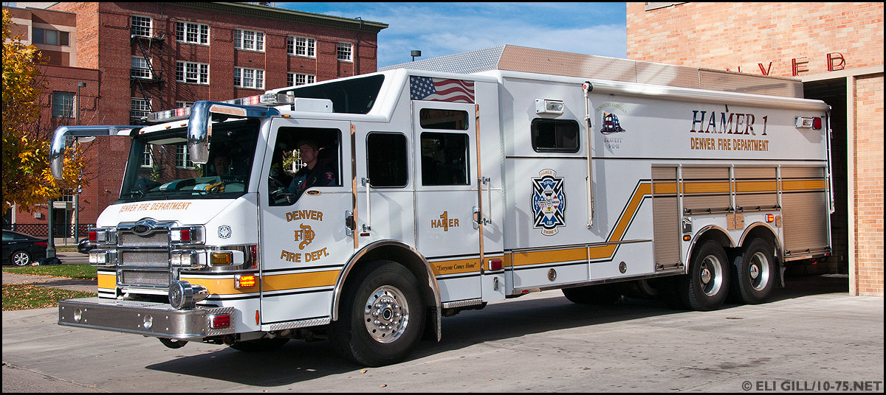

Fire stations, food stores, and community programs are just some of the civic services available in Denver. Being a major metropolitan area, the city boasts an extensive selection of after school programs throughout. Also available are an abundance of food stores and fire stations placed strategically around the city.
